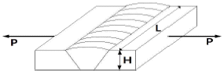

침투비파괴검사기능사 (2016-04-02 기출문제)
1과목: 침투탐상시험법(대략구분)
1. 다음 비파괴시험 중 표면결함 또는 표층부에 관한 정보를 얻기 위한 시험으로 맞게 조합된 것은?
- 침투탐상시험, 자분탐상시험
- 침투탐상시험, 방사선투과시험
- 자분탐상시험, 초음파탐상시험
- 와류탐상시험, 초음파탐상시험
(정답률: 85%)

2. 다음 침투탐상검사 방법 중 예비세척과 유화처리가 필요한 것은?
- FB-S
- FD-S
- FA-S
- FC-S
(정답률: 47%)
3. 비파괴검사법 중 철강 제품의 표면에 생긴 미세한 균열을 검출하기에 가장 부적합한 것은?
- 방사선투과시험
- 와전류탐상시험
- 침투탐상시험
- 자분탐상시험
(정답률: 70%)
4. 관(Tube)의 내부에 회전하는 초음파탐촉자를 삽입하여 관의 두께 감소 여부를 알아내는 초음파탐상검사법은?
- EMAT
- IRIS
- PAUT
- TOFD
(정답률: 68%)
5. 와전류탐상시험의 기본 원리로 옳은 것은?
- 누설흐름의 원리
- 전자유도의 원리
- 인장강도의 원리
- 잔류자계의 원리
(정답률: 82%)
6. 누설검사의 한 방법인 내압시험에서 가압기체로 가장 많이 사용되며 실용적인 것은?
- 공기
- 질소
- 헬륨
- 암모니아
(정답률: 73%)
7. 비파괴시험법 중 자외선등이 필요하지 않는 조합으로만 짝지어진 것은?
- 방사선투과시험과 초음파탐상시험
- 초음파탐상시험과 자분탐상시험
- 자분탐상시험과 침투탐상시험
- 방사선투과시험과 침투탐상시험
(정답률: 63%)
8. 각종 비파괴검사에 대한 설명 중 옳은 것은?
- 자분탐상시험은 일반적으로 핀홀과 같은 점모양의 검출에 우수한 검사방법이다.
- 초음파탐상시험은 두꺼운 강판의 내부결함검출이 우수하다.
- 침투탐상시험은 검사할 시험체의 온도와 침투액의 온도에 거의 영향을 받지 않는다.
- 육안검사는 인간의 시감을 이용한 시험으로 보어스코프나 소형TV 등을 사용할 수 없어 파이프 내면의 검사는 할 수 없다.
(정답률: 65%)
9. 선원-필름간 거리가 4m 일 때 노출시간이 60초였다면 다른 조건은 변화시키지 않고 선원-필름간 거리만 2m 로 할 때 방사선투과시험의 노출시간은 얼마이어야 하는가?
- 15초
- 30초
- 120초
- 240초
(정답률: 58%)
10. 다음 중 와전류탐상시험으로 측정할 수 있는 것은?
- 절연체인 고무막 두께
- 액체인 보일러의 수면 높이
- 전도체인 파이프의 표면 결함
- 전도체인 용접부의 내부 결함
(정답률: 78%)
11. 누설비파괴검사(LT)법 중 할로겐 누설시험의 종류가 아닌 것은?
- 추적프로브법
- 가열양극법
- 할라이드 토치법
- 전자포획법
(정답률: 44%)
12. 초음파가 두 매질의 경계면에 입사할 경우 굴절각은? (단, 입사각 : 12°, 입사파의 속도 : 1500 m/s, 굴절파의 속도 : 5100 m/s 이다.)
- 60°
- 45°
- 20°
- 3.5°
(정답률: 69%)
13. 자분탐상검사에 사용되는 자분에 대한 설명 중 가장 거리가 먼것은?
- 형광자분은 콘트라스트가 좋아 자분지시의 발견이 쉽다.
- 검사액은 자분입자를 분산시킨 액체이다.
- 큰 결함에는 미세한 입도의 자분을 사용한다.
- 자분은 낮은 보자력을 가져야 한다.
(정답률: 53%)
14. 자분탐상시험 방법의 단점이 아닌 것은?
- 시험체 표면 근처만 검사가 가능하다.
- 전기가 접촉되는 부위에 손상이 발생할 수 있다.
- 전처리 및 후처리가 필요한 경우가 있다.
- 시험체의 크기 및 형태에 큰 영향을 받는다.
(정답률: 56%)
15. 후유화성 형광침투액의 피로시험 항목에 속하지 않은 것은?
- 감도시험
- 점성시험
- 수세성시험
- 수분함유량시험
(정답률: 63%)
16. 온도가 20℃로 동일한 경우 점성이 가장 큰 물질은?
- 물
- 케로신
- 에틸알콜
- 에틸렌글리콜
(정답률: 66%)
17. 다음 중 유화제가 갖추어야 할 일반요건이 아닌 것은?
- 후유화성 침투액과 서로 잘 녹아야 한다.
- 유화 및 세척성이 좋아야 한다.
- 침투액과 혼입에 의한 유화제의 성능 저하가 적어야 한다.
- 침투성이 높아야 한다.
(정답률: 61%)
18. 다른 침투탐상과 비교하여 용제제거성 염색침투액을 사용하는 장점의 설명으로 옳은 것은?
- 간편하고 휴대성이 좋다
- 10℃~100℃에서 사용할 수 있다.
- 타 검사법보다 탐상 감도가 우수하다
- 대량 부품검사를 한번에 탐상하는 것이 용이하다
(정답률: 72%)
19. 침투탐상시험시 검사체의 결함은 언제 판독하는가?
- 현상시간이 경과한 직후
- 침투처리를 적용한 직후
- 현상제를 적용하기 직전
- 세척처리를 적용하기 직전
(정답률: 81%)
20. 다음 중 용제세척법으로 전처리할 경우 제거가 곤란한 오염물은?
- 왁스 및 밀봉제
- 그리스 및 기름막
- 페인트와 유기성 물질
- 용접 플럭스 및 스패터
(정답률: 73%)
2과목: 침투탐상관련규격(대략구분)
21. 침투탐상시험에서 의사지시가 아닌 허위지시가 나타날 수 있는 가장 큰 요인은?
- 과잉세척
- 부주의한 세척 및 오염
- 현상제의 부적절한 적용
- 침투제 적용시 온도가 너무 낮음
(정답률: 62%)
22. 일반적인 가시성 염색침투액은 어떤 색의 염료를 첨가하는가?
- 노란색
- 파란색
- 빨간색
- 등황색
(정답률: 81%)
23. 다음 중 침투제의 침투력에 영향을 주는 요인으로 틀린 것은?
- 개구부의 표면에 열려진 크기
- 침투제의 표면장력
- 침투제의 적심성
- 시험체의 밀도
(정답률: 69%)
24. 적심성과 어떤 액체를 고체표면에 적용할 때 액체와 고체 표면이 이루는 각도인 접촉각 사이의 상관관계에 대한 설명으로 옳은 것은?
- 접촉각이 90도 보다 클수록 적심능력이 제일 양호하다.
- 접촉각이 90도에서 적심능력이 제일 양호하다.
- 접촉각이 90도 보다 작을수록 적심능력이 양호하다.
- 접촉각과 적심능력은 서로 상관이 없다.
(정답률: 73%)
25. 후유화성 침투탐상시험 중 세척처리를 행할 때 적용해서는 안 되는 처리 방법은?
- 침적
- 붓기
- 붓칠
- 분무
(정답률: 76%)
26. 다음 중 후유화성 형광침투탐상검사에 관한 설명으로 틀린 것은?
- 결함검출감도가 다른 검사법에 비해 우수하다.
- 침투액의 침투성능이 우수하여 침투시간이 단축된다.
- 유화시간은 탐상감도에 크게 영향을 미치지 않는다.
- 후유화처리 과정이 분리되어 있어 추가의 시간, 인력 및 장치가 필요하다.
(정답률: 59%)
27. 다음 중 침투탐상시험에서 일반적인 시험편의 표면을 전처리하는 방법으로 가장 좋은 것은?
- 연마
- 쇠솔질
- 증기세척
- 샌드 블라스팅
(정답률: 70%)
28. 침투탐상 시험방법 및 침투지시모양의 분류(KS B 0816)에 따라 강 용접부를 탐상할 때 시험체와 침투제의 표준온도 범위로 옳은 것은?
- 4~25℃
- 15~50℃
- 20~60℃
- 25~70℃
(정답률: 86%)
29. 침투탐상 시험방법 및 침투지시모양의 분류(KS B 0816)에서 평가가 끝난 후 잔류하고 있는 침투탐상제를 제거하는 것은?
- 전처리
- 후처리
- 지시무늬
- 에칭
(정답률: 86%)
30. 침투탐상 시험방법 및 침투지시모양의 분류(KS B 0816)에 따라 시험체와 침투액의 온도가 20℃ 일 경우 침투시간이 5분일 때 표준 현상시간은 얼마인가?
- 3분
- 7분
- 30분
- 침투시간의 1/2
(정답률: 79%)
31. 침투탐상 시험방법 및 침투지시모양의 분류(KS B 0816)에 따른 자외선 조사장치 강도계 측정시 필터면에서 몇cm 떨어져서 측정하는가?
- 15cm
- 30cm
- 38cm
- 48cm
(정답률: 60%)
32. 침투탐상 시험방법 및 침투지시모양의 분류(KS B 0816)에 따른 결함의 분류는 모양 및 존재 상태에 따라 정한다. 이에 의한 결함에 해당되지 않은 것은?
- 독립 결함
- 연속 결함
- 분산 결함
- 불연속 결함
(정답률: 73%)
33. 침투탐상 시험방법 및 침투지시모양의 분류(KS B 0816)에 의한 잉여침투액의 제거방법과 명칭의 조합이 틀린 것은?
- 용제제거에 의한 방법 : 방법 C
- 휘발성 세척액을 사용하는 방법 : 방법 A
- 물베이스 유화제를 사용하는 후유화에 의한 방법 : 방법 D
- 기름베이스 유화제를 사용하는 후유화에 의한 방법 : 방법 B
(정답률: 81%)
34. 침투탐상 시험방법 및 침투지시모양의 분류(KS B 0816)에 따라 반드시 재시험을 하여야 하는 경우로 옳은 것은?
- 후처리를 하지 않았을 때
- 의사지시로 판명이 난 경우
- 조작방법이 잘못이 있었을 때
- 지시모양이 흠이라고 판명된 경우
(정답률: 61%)
35. 침투탐상 시험방법 및 침투지시모양의 분류(KS B 0816)에 사용되는 A형 대비시험편의 판 두께 범위 및 흠 깊이는?
- 판 두께 범위 : 5~8mm, 흠 깊이 : 2.5mm
- 판 두께 범위 : 8~10mm, 흠 깊이 : 1.5mm
- 판 두께 범위 : 10~12mm, 흠 깊이 : 2.0mm
- 판 두께 범위 : 10~15mm, 흠 깊이 : 1.5mm
(정답률: 65%)
36. 침투탐상 시험방법 및 침투지시모양의 분류(KS B 0816)에 따라 강 재질의 제품을 침투처리할 때 표준 침투시간이 다른 경우는?
- 용접부의 갈라짐
- 단조품의 갈라짐
- 주조품의 용탕 경계
- 용접부의 융합 불량
(정답률: 54%)
37. 침투탐상 시험방법 및 침투지시모양의 분류(KS B 0816)에서 전수검사의 경우 합격품에 대하여 각인을 하고자 하였으나 부품의 모양 때문에 각인이 어려웠다. 다음 중 어떻게 하는 것이 옳은가?
- 황색으로 착색하여 표시한다.
- 적갈색으로 착색하여 표시한다.
- 하얀색으로 착색하여 표시한다.
- 검은색으로 착색하여 표시한다.
(정답률: 58%)
38. 침투탐상 시험방법 및 침투지시모양의 분류(KS B 0816)에 따라 탐상시험을 수행 중 현상제를 적용하고 보니 형광잔류가 현저히 나타나있음을 발견하였다. 이 현상제를 어떻게 처리해야 하는가?
- 폐기하고 재시험한다.
- 침전관에 침지시킨 후 재사용한다.
- 증류수를 첨가하여 형광물질을 제거한다.
- 분산매를 50ml 가량 첨가 보충시키고 사용한다.
(정답률: 70%)
39. 침투탐상 시험방법 및 침투지시모양의 분류(KS B 0816)에 따라 탐상시험시의 온도 기록에 있어서 시험체와 침투액의 온도가 몇 ℃ 이하인 경우 반드시 기재하여야 하는가?
- 10℃
- 15℃
- 25℃
- 37℃
(정답률: 65%)
40. 침투탐상 시험방법 및 침투지시모양의 분류(KS B 0816)에 따른 시험방법의 분류 기호 FC-S에서 “FC”의 의미는?
- 수세성 형광침투액을 사용하는 방법
- 용제제거성 형광침투액을 사용하는 방법
- 후유화성 염색침투액을 사용하는 방법
- 용제제거성 염색침투액을 사용하는 방법
(정답률: 72%)
3과목: 금속재료일반 및 용접일반(대략구분)
41. 침투탐상 시험방법 및 침투지시모양의 분류(KS B 0816)에서 연속 침투지시의 모양 중 지시의 간격이 얼마일 때 서로간의 거리까지 지시의 길이로 산정하는가?
- 동일 직선 위에 있으며 2mm
- 동일 직선 위에 있으며 4mm
- 동일 직선이 아니어도 2mm
- 동일 직선이 아니어도 4mm
(정답률: 70%)
42. 침투탐상 시험방법 및 침투지시모양의 분류(KS B 0816)에 의해 탐상시험할 때 시험체의 일부분을 시험하는 경우, 전처리는 시험하는 부분에서 바깥쪽으로 최소한 몇 mm범위까지 깨끗하게 하여야 하는가?
- 20
- 25
- 30
- 35
(정답률: 74%)
43. 다음의 강 중 탄소함유량이 가장 높은 강제는?
- STS11
- SM45C
- SKH51
- SNC415
(정답률: 49%)
44. Pb제 청동 합금으로 주로 항공기, 자동차용의 고속베어링으로 많이 사용되는 것은?
- 켈밋
- 톰백
- Y합금
- 스테인리스
(정답률: 64%)
45. 면심입방격자(FCC)에 관한 설명으로 틀린 것은?
- 원자는 2개이다
- Ni, Cu, Al 등은 면심입방격자이다
- 체심입방격자에 비해 전연성이 좋다.
- 체심입방격자에 비해 가공성이 좋다.
(정답률: 67%)
46. Cu에 3~5%Ni, 1%Si, 3~6%Al을 첨가한 합금으로 CA 합금이라 하며 스프링재로로 사용되는 것은?
- 문쯔메탈
- 콜슨합금
- 길딩메탈
- 커트리지 브라스
(정답률: 54%)
47. 1성분계 상태도에서 3중점에 대한 설명으로 옳은 것은?
- 세 가지 기압이 겹치는 점이다
- 세 가지 온도가 겹치는 점이다.
- 세 가지 상이 같이 존재하는 점이다.
- 세 가지 원소가 같이 존재하는 점이다.
(정답률: 69%)
48. 주철의 주조성을 알 수 있는 성질로 짝지어진 것은?
- 유동성, 수축성
- 감쇠능, 피삭성
- 경도성, 강도성
- 내열성, 내마멸성
(정답률: 53%)
49. 계(system)의 구성원을 나타내는 것은?
- 성분
- 상률
- 평형
- 복합상
(정답률: 67%)
50. 표준상태에서 탄소강의 5대 원소 중 강의 조직과 성질에 크게 영향을 주는 것은?
- C
- P
- Si
- Mn
(정답률: 68%)
51. 두랄루민은 알루미늄에 어떤 금속원소를 첨가한 합금인가?
- Fe - Sn – Si
- Cu – Mg - Mn
- Ag – Zn – Ni
- Pb – Ni - Mg
(정답률: 72%)
52. Fe-C 평형 상태도에 존재하는 0.023%C ~ 0.8%C를 함유한 범위에서 나타나는 아공석강의 대표적인 조직에 해당하는 것은?
- 페라이트와 펄라이트
- 펄라이트와 레데뷰라이트
- 펄라이트와 마텐자이트
- 페라이트와 레데뷰라이트
(정답률: 65%)
53. 탄소 함유량으로 철강 재료를 분류한 것 중 틀린 것은?
- 강은 약0.2% 이하의 탄소함유량을 갖는다.
- 순철은 약 0.025%이하의 탄소함유량을 갖는다.
- 공석강은 약 0.8%정도의 탄소함유량을 갖는다.
- 공정 주철은 약 4.3%정도의 탄소함유량을 갖는다.
(정답률: 52%)
54. 텅스텐은 재결정에 의해 결정립 성장을 한다. 이를 방지하기위해 처리하는 것을 무엇이라고 하는가?
- 도핑(Doping)
- 라이닝(Lining)
- 아말감(Amalgam)
- 비탈리움(Vitallium)
(정답률: 63%)
55. 압입자국으로부터 경도값을 계산하는 경도계가 아닌 것은?
- 쇼어 경도계
- 브리넬 경도계
- 비커스 경도계
- 로크웰 경도계
(정답률: 61%)
56. 용탕의 냉각과 압연을 동시에 하는 방법으로 리본 형태의 비정질 합금을 제조하는 액체 급랭법은?
- 쌍롤법
- 스퍼터링
- 이온 도금법
- 전해 코팅법
(정답률: 58%)
57. 다음 중 실루민의 주성분으로 옳은 것은?
- Al – Si
- Sn – Cu
- Ni – Mn
- Mg - Ag
(정답률: 78%)
58. 피복아크용접을 할 때 용접봉의 위빙(weaving)운봉 폭은 어느 정도가 가장 좋은가?
- 비드 폭의 2 ~ 3배
- 루트간격의 1 ~ 2배
- 비드높이의 1 ~ 2배
- 심선 지름의 2 ~ 3배
(정답률: 40%)
59. 다음 그림과 같이 맞대기 용접에서 강판의 두께20mm, 인장하중 5000N, 용접부의 허용인장응력을 50N/mm2로 할 때 용접길이는 몇 mm인가?

- 50
- 100
- 500
- 1000
(정답률: 41%)
60. 다음 중 야금학적 접합 방법이 아닌 것은?
- 용접
- 압접
- 납땜
- 리벳 이음
(정답률: 69%)